ヘッドウォータースのフィード
https://zenn.dev/p/headwaters
株式会社ヘッドウォータースのテックブログです。 生成AI、LLM、Azureのサービスや資格、IoT、XR系などData&AIとApp modernizeに関して幅広く投稿します！
フィード
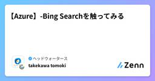
【Azure】-Bing Searchを触ってみる
ヘッドウォータースのフィード
執筆日2025/1/1 やることAzure AI Agent Serviceを触っている時に出会ったBing Search.初めましてだったので、勉強したことをまとめようかなと。 Bing Searchとは？MicrosoftのBing Search APIを使用して、アプリケーションやサービスに高度な検索機能を統合するためのサービスです。Web検索、画像検索、ニュース検索など、Bingの強力な検索エンジンを活用した検索機能をAPIで使える。 Bing SearchでできることBing Web SearchBing Image SearchBing New...
3日前
Let's Encrypt 証明書発行でつまずいたこと②
ヘッドウォータースのフィード
環境AWS EC2Ubuntu22.04WebサーバーはApacheDNSサービスはRoute53 何が起きたか旧サーバーから新規サーバーへの移行にあたり、改めてLet's Encryptの証明書を発行をしようとしました。ドメイン名は同じにしていたがグローバルIPアドレスが変更となる仕様でした。ただ、Route53でDNS切り替え（IPアドレスの変更）をしておらず、Let's Encryptの証明書を発行出来ませんでした。 構成簡易構成移行構成（CentOSは既にサポート終了） 初めに試したコマンドLinux環境でLet's Encr...
4日前
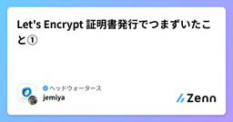
Let's Encrypt 証明書発行でつまずいたこと①
ヘッドウォータースのフィード
環境AWS EC2Ubuntu22.04WebサーバーはApache 注意点WebサーバーがApacheでない場合は今回の記事は参考になることはないと思います。Apacheは必ず起動しておくこと。 概要 初めに試したコマンドLinux環境でLet's Encrypt証明書を発行しようとしました。検証で下記のコマンドを実施しました。certbot certonly --agree-tos --apache -w /var/www/html/example -d example.com結果、下記のように失敗するのですが。Some challe...
4日前
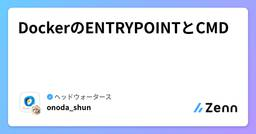
DockerのENTRYPOINTとCMD
ヘッドウォータースのフィード
ENTRYPOINTとは？ENTRYPOINTは、コンテナが起動されたときに実行されるデフォルトのコマンドを指定します。ENTRYPOINTに指定されたコマンドは、コンテナが起動されるたびに必ず実行されます。 CMDとは？CMDは、デフォルトのコマンドおよび引数を指定します。CMDはENTRYPOINTと組み合わせて使われることが多く、ENTRYPOINTに指定されたコマンドのデフォルトの引数を提供します。ENTRYPOINTとCMDは、Dockerコンテナの起動時に実行されるコマンドを制御するための強力なツールです。ENTRYPOINTは必ず実行されるコマンドを指定し、C...
4日前
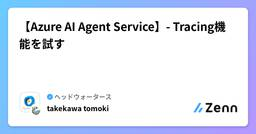
【Azure AI Agent Service】- Tracing機能を試す
ヘッドウォータースのフィード
執筆日2024/12/31 やることAzure AI Agent Serviceには、Tracing機能がある。Tracing機能とは、特定のエージェント実行に関係する各プリミティブの入力と出力を、それが呼び出された順序で明確に確認できる。https://learn.microsoft.com/ja-jp/azure/ai-services/agents/concepts/tracingちょっとよくわからないので触ってみる 参考資料https://github.com/Azure/azure-sdk-for-python/blob/main/sdk/ai/az...
4日前
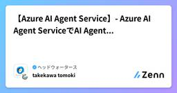
【Azure AI Agent Service】- Azure AI Agent ServiceでAI Agentを作成してみる①
ヘッドウォータースのフィード
執筆日2024/12/31 やることAzure AI Agent ServiceがAzure AI Foundryで利用可能になりましたー！AI Agentについて理解が浅いので、実際に触りながら学習しようと思います。Bing Searchをナレッジにしようかなと。※プレビュー版のため、挙動が不安定です... 流れAzure環境準備AIエージェント作成プレイグラウンドで実装コードで実装 Azure環境準備必要なリソースは以下です。Azure OpenAIAzure AI Servicesプロジェクト/hubGrounding with Bi...
4日前
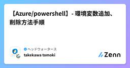
【Azure/powershell】- 環境変数追加、削除方法手順
ヘッドウォータースのフィード
執筆日2024/12/31 概要Azure AI Agent Serviceを使用して検証を行っていた際に、認証の設定に問題が発生しました。具体的には、以下のPythonコードを使用して認証を試みたところ、誤ったサブスクリプションにアクセスしてしまうというエラーが発生しました。project_client = AIProjectClient.from_connection_string( credential=DefaultAzureCredential(), conn_str=os.environ["PROJECT_CONNECTION_STRING"],...
4日前
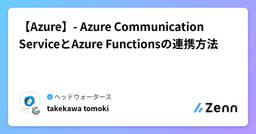
【Azure】- Azure Communication ServiceとAzure Functionsの連携方法
ヘッドウォータースのフィード
執筆日2024/12/31 構成図 手順Azure Communication Serviceを構築/電話番号を発行Event GridトリガーのAzure FunctionsをデプロイEventGrid を構築テスト Azure Communication Serviceを構築/電話番号を発行Azure Communication Serviceを作成し、電話番号を発行※詳細な手順については、以下の記事を参考にしてくださいhttps://zenn.dev/headwaters/articles/7f954f2bef8eb8 Event Gr...
4日前
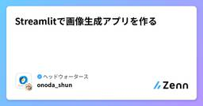
Streamlitで画像生成アプリを作る
ヘッドウォータースのフィード
はじめにStreamlitで参考画像から新しい画像を作成するアプリを作ってみたいと思います。 streamlitとはhttps://zenn.dev/headwaters/articles/893d8604f35198https://zenn.dev/headwaters/articles/34caea66e66470 画像生成アプリを作る上で、こちらを参考にStreamlitに書き直します。https://zenn.dev/headwaters/articles/4b7554dc743196app.pyimport streamlit as stimport ...
4日前
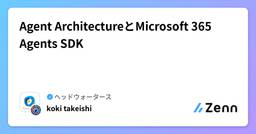
Agent ArchitectureとMicrosoft 365 Agents SDK
ヘッドウォータースのフィード
やりたいことIgnite 2024の「Developers guide to building your own agents」のスライドでエージェントのアーキテクチャとMicrosoft 365 Agents SDKについて紹介があったのでメモします。https://ignite.microsoft.com/en-US/sessions/BRK167?wt.mc_ID=Ignite2024_esc_corp_bl_oo_bl_BONまず、エージェントのアーキテクチャから下記の要素があるようです。オーケストレーターはFundation modelsを使いながら、知識の取...
4日前
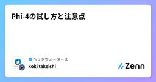
Phi-4の試し方と注意点
ヘッドウォータースのフィード
Phi-4をAI Foundryのプレイグラウンドで試すことはとても簡単です。モデルとエンドポイントで、Phi-4を選択してポチポチしていくだけです。ただ、VMを使用するみたいです。で、このA100のVMですが1時間4.78ドルくらいらしいので、一日放置していたら、100ドルくらいになります。当たり前すぎる注意点ですが、他のAOAIのモデルのように使った分だけの従量課金ではない（リソースで見ると使った分だけなのですが。。）のでご注意を。。ちなみに、Phi-3.5-MoE-instructだと、サーバーレスAPIとPhi-4と同様にVMを選択することができます。VMの設定を...
4日前
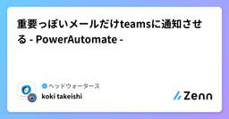
重要っぽいメールだけteamsに通知させる - PowerAutomate -
ヘッドウォータースのフィード
やりたいことCopilot Studioのエージェントのユースケースを考えていたら、重要っぽいメールをいい感じに選別してteamsにチャットしてもらいたいなと。ただ、これはGPT使わなくても問題ないなーと思ったので、PowerAutomateの利用例になります。 処理の流れteamsのファイルに通知して欲しいドメインを記載したExcelファイルを作成PowerAutomateでフローを作成3. 新着メールのトリガー追加4. SharePointのExcelファイルの一覧を取得5. 新着メールの送信者のドメインがファイル一覧にあり、メール本文に「竹石」と記載があれば...
4日前
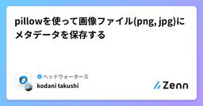
pillowを使って画像ファイル(png, jpg)にメタデータを保存する
ヘッドウォータースのフィード
執筆日2024/12/27 概要画像のキャプションをあらかじめファイルにメタデータとして保存しておきたいときに、pillowライブラリで簡単に対応する形式のメタデータ保存できることを知ったのでメモ書きです。画像の説明を生成AIなどで作ったときに、そのキャプションを検索対象にするサービスを実装するのであればデータベースで管理するのがいいですが、そこまでリッチな構成が必要ない、画像とキャプションが同じところにあればいいなというときに使えそうです。（GUIアプリで画像クリックorホバーでキャプションが表示されるとか） 依存ライブラリインストールpip install pill...
7日前
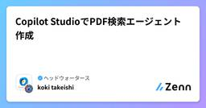
Copilot StudioでPDF検索エージェント作成
ヘッドウォータースのフィード
やりたいことIBIS2024にメンバーが参加した際にポスターを社内共有してもらいました。ただ、ポスター自体1日100個以上あるので、とても見きれませんし、探せません。ファイル名に情報がないので、PDFの中身をキーワード検索したいと思いました。Copilot Studioを使うとTeamsから社内の人がキーワード検索できるアプリを3分くらいで作れたのでご紹介します。 Copilot StudioについてCopilot StudioはTeamsやSharePointなどMicrosoft365などとの連携が可能で、簡単にエージェントを作成できるツールです。様々なレイヤー...
7日前
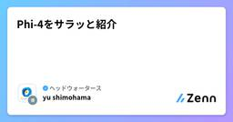
Phi-4をサラッと紹介
ヘッドウォータースのフィード
この記事の対象時間がないので、Phi-4について、論文の内容をサラッと知りたい方SLM（小規模言語モデル）に興味がある方https://arxiv.org/abs/2412.08905 Phi-4とは？12月13日(米国現地時間)に発表されたSLMパラメータ数は14B（140億）で、Phi-3 mediumと同じPhi-4のライセンスは『Microsoft Research License Agreement』で商用利用不可※Phi-3はMITライセンスで無料で商用利用可能STEM分野のQ&Aタスクに優れていおり、GPQA(大学院レベルのSTEM問題)や...
8日前

【学習メモ】量子の話が難しいという話、量子アルゴリズムの計算量とか
ヘッドウォータースのフィード
自分用の学習メモとして記事に載せます。。今回は特に誤りがある可能性が高いので、ご注意ください。 量子の話が難しい量子コンピュータ、量子回路、量子アルゴリズム、この辺りの学習をしようとしたのですが、脳内に数式がイメージできずに挫折しました。。量子回路を古典電気電子系で例えると、交流回路+デジタル回路のような雰囲気に感じました。交流回路では、何かしらの計算をするときに虚数を使って単位円で位相を表現すると思います。量子回路では、単位球(ブロッホ球)で量子の状態を表現することに加えて、デジタル回路(組合回路、順序回路)的なステートフルな話が入ってくる感じかなと思いました。単位円から単位...
8日前
Microsoft Copilot Studio -Teamsへの導入編-
ヘッドウォータースのフィード
はじめにMicrosoft copilot studioを内容をまとめた記事になります。Microsoft copilot studioの実装方法をまとめた記事はいくつか拝見したのですが、それに比べて実装したMicrosoft copilot studio(エージェント)を導入する手順の記事は少ないという印象を受けたので記事化してみました！ 概要Microsoft copilot studioで作成したエージェントをMicrosoft Teams上で使用するために導入までの手順を記載します 前提：1: Microsoft copilot studioを使用可能環境、アカ...
8日前
LangChain Expression Language(LCEL)を使ってOutputParserを動かしてみる
ヘッドウォータースのフィード
やることLCELでOutputParserを動かしてみる 参考書籍最近出版されたこちらの書籍をベースに進めていきます。https://gihyo.jp/book/2024/978-4-297-14530-9 OutputParserとは？テキスト形式のLLMの出力をJSONや辞書などのオブジェクトに変換することができます。出力をそのまま文字列として返すStrOutputParserや、Pydanticモデルを用いて構造化データに変換するPydanticOutputParserなどいくつか種類があります。 LangChain Expression Language(...
10日前
ビジョン言語モデル(VLM) と ビジョン基盤モデル(VFM)の違いは？ Phi-3.5-vision / Florence-2 を具体例に
ヘッドウォータースのフィード
Vision Language Model(VLM) と Text指示ができるVision Foundation Model(VFM) の違いと用法が判らなかったので、マイクロソフト系のVLM(phi-3.5-vision)とVFM(Florence-2)を題材に調べてみました。調べていて思ったんですが、VLMとVFMの比較というよりも、phi-3.5-visionとFlorence-2の比較になっています。ただ、具体例を持ち出さずにVLMとVFMを比較しても空中戦になる気がするので、致し方ないかなとも。。結論としては、違いはこの表の通りで、用法としては以下が目安になりそうです。...
11日前
【Azure】- Azure Communication Servicesの電話番号申請までの流れまとめ
ヘッドウォータースのフィード
執筆日2024/12/24 やることAzure Communication Servicesでは、電話番号を取得することができます。申請までの流れをまとめます。 手順Azure Communication Servicesを構築する電話番号を申請する Azure Communication Servicesを構築するAzure Portalを開く検索欄で「通信サービス」と検索し、「通信サービス」をクリックする「＋作成」をクリックする必要なパラメータを入力し、作成する※今回はデータの場所を「Japan」に設定します構築が完了したことを確...
11日前